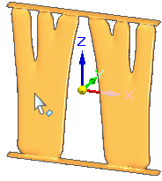
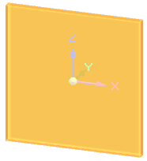
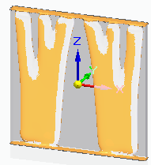

Solve the generative study
Generating a structurally optimized body for a defined generative design study is part of the Generative Design workflow.
-
Select the Generative Design tab→Generate group→Generate command
 .
. -
In the Generate Study dialog box, change the optimization parameters or use the default settings. For information about how these options affect the results, see Generate Study dialog box.
Tip:Observe that changing the study quality using the slider control also adjusts the Rough approximate study time indicated in the dialog box. You may want to process using the default setting the first time to see what type of result you get. Processing time increases with increases in study quality.
-
Click the Generate button to begin processing.
The Generative Design Process Information dialog box is displayed when processing completes or if there are errors.
The generated shape is shown in the graphics window and added to the bottom of PathFinder. A matching entry, Generative Study 1 Result, is added to the bottom of the Generative Design pane.
-
To access the generated shape in PathFinder, expand the Construction Bodies node. The Solid Mesh Body 1 entry is the resulting mesh body.

This is the object you can Print directly to a 3D printer.
-
To access the original input body, expand the Design Bodies node in PathFinder.

-
Use the check boxes to show and hide the original and resulting bodies.

Tip:To review the settings used to solve a study without having to reopen the Generate Study dialog box again, hover over the study name in the Generative Design pane.

-
-
You can experiment with different optimization settings on the resulting mesh body by selecting the Generate command again. This will change the result you got the first time.
If you want to keep the current result but you also want to test different optimization settings, first remove the result from the study using the Detach from Study shortcut command on the Generative Study Result 1 object in the Generative Design pane.
Tip:To learn how you can use the information and the physical results of this structural optimization, see Using Generative Design results.
Requirements
The Generate command is not available until minimum study definition requirements are met.
-
A material must be assigned. Material properties are an important part of the solution.
-
A body is selected as input.
-
At least one load is defined.
-
At least one constraint is defined.